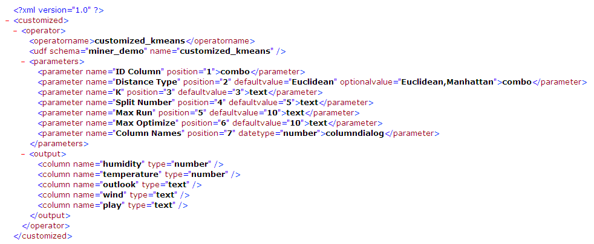

Alpine supports the Custom Operator for defining new operators for users to include in their workflows, based on database UDFs (stored procedures). Administrators need to supply an xml configuration file according to the definition rules below, and import it into Alpine. If the definition is correct, all users can use it similarly to other operators.
The first part of this document provides administrative steps, aided by screenshots, for binding a custom operator to Alpine's engine, and the 2nd part contains an example of a custom operator defined by XML. The last part of this document contains the detailed XML schema from which to define an operator.
All the output column names returned by the UDF will be specified in the XML definition. The administrator may also specify that the output table should include the original columns from the input table.
Based on the definition in the XML, Alpine will generate the corresponding parameter controls for the operators. This includes the following minimal set of parameters, which control the output table, plus the parameters defined in the XML.
| Property Name | UI Control | Values |
| Output Type | Drop-down | Table or view |
| Output Schema | Drop-down | Available schema in the database |
| Output Table | Text | Specify the name of output table/view. |
| Drop If Exist: | Drop-down | Yes or No. Specify whether to drop the existing table/view if one already exists in the database with the same name. |
| Carryover Columns: | dialog | Specify columns from the source tables in addition to the columns returned by UDF to be included in the output table/view. |
The sample below presents a sample XML file defining a custom operator.

The administrator specifies the name of the operator, e.g. "<operatorname lang=¡±EN¡±>customized_kmeans</operatorname>"
| Label Name | operatorname |
| Label Value | User defines the name of the customized operator for the UDF. This is a required value and needs to be unique among all operators. |
| Attribute | lang |
| User may define the operator name in multiple languages by using multiple lang attributes. Default value: ¡°EN¡±. Optional. |
"<udf schema="miner_demo" name="customized_kmeans">"
| Label Name | udf |
| Attribute | schema |
| Specify the schema associated with the UDF | |
| Attribute | name |
| Specify the name of the UDF |
The administrator must now specify the parameters to be passed into the UDF, which are constant values or the names of table columns, e.g. "<parameter name="k" position="3" defaultvalue="3">text</parameter>"
| Label Name | parameter |
| Label Value | Specify which control should be used in the UI for defining the parameter Optional value:
|
| Attribute: | name |
| The administrator must define this attribute as the parameter name shown on the property tab of the operator. | |
| Attribute: | position |
| Specify the position of the parameter in the UDF calling sequence. | |
| Attribute | defaultvalue |
| Define the default value of for this parameter. | |
| Attribute | datatype |
| Optional: Specify the datatype of the parameter (number, text, integer, date) | |
| Attribute | optionalvalue |
optionalvalue only used in combo case for displaying a list of constant values. If optionalvalue is not set, Alpine will retrieve columns from the preceding operator as the set items from which the user can select. The value selected by the user will be surrounded by double quotes during SQL execution. The syntax of optionalvalue will be a string which consists of multiple values separated by comma (e.g. "Euclidean,Manhattan"). All the values selected by the user will be quoted in SQL execution if ¡°datatype¡± is null or set to "text". |
Define the output of the UDF (column names and types). This definition will be used by Alpine during the design process when a user connects a customized operator to succeeding operators.
| Label Name | column |
| Definition of columns generated by a UDF operator. This definition will be used by Alpine during the design process when the user connects a custom operator to succeeding operators. | |
| Attribute | name |
| Name of the column generated by the UDF. | |
| Attribute | type |
| Data type of the column. | |
|
<output>
<column name="humidity" type="number" />
<column name="temperature" type="array" />
<column name="outlook" type="text" />
<column name="wind" type="text" />
<column name="play" type="text" />
</output>